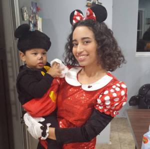

Features Writing
Donald Trump and Hillary Clinton have run the most polarizing and brutal presidential campaigns in recent memory, offering Americans a candidate who has never been a politician and a career politician who has never been president.
This reporter interviewed six people on their views of the presidential election, their opinions on the other candidate and how they think this election will affect the United States.
Five said that Americans are upset with the established government, giving way for political outsiders like Trump to become the Republican candidate and for Democratic Socialist Senator Bernie Sanders to run a primary Democratic campaign that exceeded expectations.
“This election shows that Americans are tired of the status quo politicians have,” said Andrew Fenwick, 21, a College of New Jersey Political Science major from Rutherford, New Jersey. Fenwick was a former supporter of Senator Sanders but now supports Clinton ever since Senator Sanders lost the nomination.
“He was an outsider and an underdog. He talked about the greed of Wall Street, Citizens United, environmental issues, he addressed the Native American community. All of these I was passionate about,” he said.
The support for the ‘outsider’ is a sentiment shared by Karina Florez, 20, a Domino’s pizza deliverer from Englewood, New Jersey. Like Fenwick, Florez was a Sander’s supporter until the Democratic National Convention, and now supports Clinton, although she is not particularly excited about the Democratic candidate, “Voters will be choosing the lesser of two evils,” she said.
Florez said that Clinton will win the nomination “but only because she’s the other option. She’s not Trump, but it’s not like she’s loved by Americans either.” Clinton and Trump have the lowest favorability ratings of any Democratic or Republican nominees in decades, according to a Gallup poll.
The unfavorability ratings of the presidential candidates are record-breaking and bi-partisan, according to polls by RealClearPolitics. Democrats, Republicans, Independents, liberals and conservatives feel stuck with candidates whom they didn’t really want but have eventually learned to accept. Trump supporter Nathan Fishman, 21, is a tank driver for the Israel Defense Forces living in Jerusalem originally from Teaneck, New Jersey. Fishman described the election as “really shameful,” and said that he considered both candidates to be “awful,” but that “there are better and worse candidates. They aren’t equally awful.”
“There wasn’t one candidate that I could point to that I felt was my candidate,” he said. “That being said, I agree with the main policies of Donald Trump, so I guess you can say he is my first choice. I just wish he wasn’t such a buffoon,” he said.
Only one of the six people interviewed said that they supported one of the two current candidates from the beginning of the presidential election.
Diego Ojeda, 50, a Spanish teacher from Louisville, Kentucky, said “Hillary has been the only choice for me. Electing her will show the real progressive America I have always believed in.” Ojeda, a U.S. citizen born in Bogota, Colombia, said that he is very excited about the election and is ready to vote in November. “Having Hillary as the U.S. President will empower women in the world and will help our society understand that politicians must be individuals who are prepared to lead,” he said.
Ojeda was the only person interviewed that gave a mostly positive opinion of the election. The rest gave gloomy and disappointed responses to an election they feel was chosen for them, with candidates that they didn’t really want.
Fenwick described Clinton as “holding traces of corruption and mismanagement at a federal level,” and that she comes off as if she was “entitled to the position because she has been in politics her whole life.” Florez described the Clintons as being “shrouded in scandals.”
They weren’t so nice with Trump. Fishman, a Trump supporter, described Trump as an “awful candidate” and a “buffoon.” Fenwick described Donald Trump as “ignorant, self-motivated, and has little-to-no experience to the standards that president needs” and that Clinton should “let him destroy himself” if she hopes to win the election
However, the most searing criticism of Trump came from Alexander Blaha, a 22-year-old Hunter English Literature major from Long Island. “Trump is running on a platform of thinly-veiled white nationalism,” Blaha said. “He and his supporters are scared of the world, scared of modernizing, laugh in the face of intelligence and education, think nothing of proposing the most preposterous, unachievable and extremely close-minded policies in a three-word utterance.”
Nonetheless, there is a positive edge to all of this. All six interviewees said that they will vote this November, a civil right so often ignored by most Americans that the U.S. voter turnout trails most developed countries with 53.6 percent, according to a PEW Research Center study. The world’s highest turnout rate was Belgium with 87.2 percent of people showing up to the polls
“People are angry and ashamed. Many are abstaining from the vote,” said Genevieve Arroyo, 20, a Hunter English major living in Yorkville. “I do believe that more people at least registered to vote because of [this election], and the parties will be more careful with choosing who will lead them.” Arroyo said that will vote for Clinton, and even though Clinton wasn’t her first choice, she said that “if someone doesn’t vote, then they have no right to talk about the election and be upset about the outcome.”
Perhaps it is the divisive nature of the election or the uncertain future of the Oval Office that is motivating voters ― especially millennials who recently turned old enough to vote ― to want to participate in the election. Negativity and conflict is never desired, but it seems to be motivating the citizens to exercise their right to participate in democracy, making their voices heard by the people who represent them; but if the people speak and no one is around to hear them, do they still make a noise?